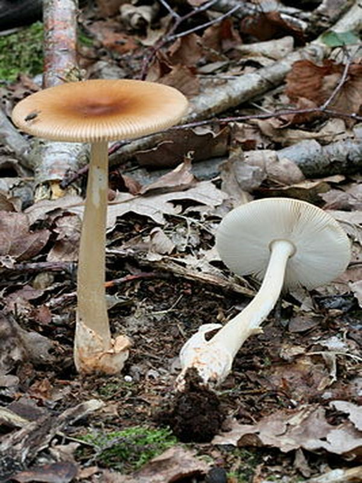

Rotbrauner Streifling
Amanita fulva
Zu den häufigsten Pilzen im Moorbirkenwald zählt der Rotbrauner Streifling. Im Rohen zustand ist er giftig, gut gekocht kann er jedoch verzehrt werden sein Speisewert wird jedoch als gering geschätzt.
Zu den häufigsten Pilzen im Moorbirkenwald zählt der Rotbrauner Streifling. Im Rohen zustand ist er giftig, gut gekocht kann er jedoch verzehrt werden sein Speisewert wird jedoch als gering geschätzt.